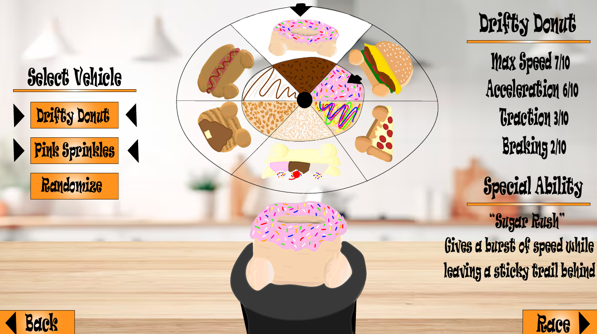

GAME UI
Racing Food
i did this project in my ui/ux for games class. the goal was to design a compelling and functional ui asset for a randomly assigned game genre and theme. i was allowed to pick from a couple different genres and themes. i picked to design a character selection screen for a racing game with a playful theme. i decided to make it food themed where the cars race through a kitchen. i wanted the playful theme to really jump out to the player with the food cars, the selection wheel, the font, and the color of the buttons.
Game Swap

i did this project in my ui/ux for games class. the goal was to design a ui style guide for a fictional game of your choice then swap style guides with our partner. my partner's style guide described that he wanted his game to be like a pvp puzzle game, like puyo puyo tetris but with different types of common puzzles. it will have players go against each other for points. in the style guide he stated wanting to have the board of both players contained in a box and within that box it shows each player’s score on the current game, who has won more games overall, each player’s avatar, and the next piece. lastly having the font simplistic and for the gameplay screen to have bright colors.